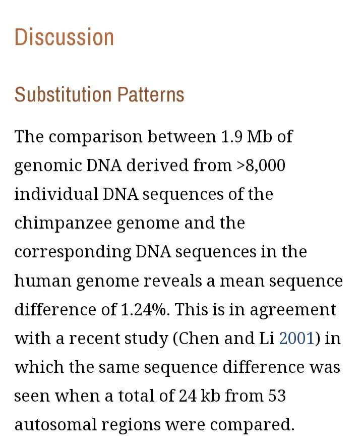

Aslam alikum
Today we will respond to the number one evidence for evolution and the most common icon in evolution theory
The genetic similarity between humans and chimpanzees
Now this argument is based on the similarity of the genetic information (DNA)
between two species as evidence for common dissent after they failed in proving that from paleontology field because it's just speculations and cherry-picking for data
But the problem with that evidence is that it's not like what people think !!
When you hear the statement we share %98 Of our DNA with chimpanzees
You will think that he is talking about all the genetic informations you have like comparing all the genetic informations between us and came to this conclusion
But is that really the case ?
The answer is simply NO !!!
what scientists did was a process off selection and cherry picking of data again by using a software to come to such a conclusion
In order to reach this point %98 they need to eliminate all the non coding DNA like 《introns DNA sequence of the F traALE region that includes the gene for F pilin and large amounts from the CDNA 》
Wich means that they only took 1.9 million nitrogen bases and compared them to
3 billion nitrogen bases
https://www.ncbi.nlm.nih.gov/pmc/articles/PMC379137/

So imagine the number of the nitrogen bases that will be eliminated by the software in order to get the %98 similarity
They only compared %0.064 of our genomes
And the reason why did that is that they thought that the non cDNA has no function so they assumed it has no importance to compare and went to the coding DNA directly but this assumption has many problems
1) the non cDNA do have essential functions that's why new scientific papers calling it the hiding treasure
2 the assumption that similarity of the coding DNA is evidence for common dissent is not necessarily true it's an assumption only based on logical fallacie
For example when I look at different types of cars I will find that there is something common between them for example all the cars has wheels but I will assume that since all cars has wheels therefore only one company made all these different types of cars why because all of them has wheels but what will you tell me is no they have wheels because wheels are essential for movement so they had this similarity in order to serve certain function so companies shared the same structure to serve the same purpose this is exactly the same thing regarding the coding DNA when you have genes responsible for producing proteins and this proteins has certain function so they should have certain similarity because they have similar function like for example the (HB) gene it has the same exact function between other animals because it is responsible to produce the protein hemoglobin which is helping in carrying the oxygen and carbon dioxide so because we had similar functions in our bodies it is normal thing to find certain similarity in our genes because the designer our creator made this gene similar to certain level to serve the same function so that's why the Assumption of saying that genetic similarity is a direct evidence for common descent is not logical argument at all
and after we clarified this counter argument
We will go to the gene bank to show you guys haw did they do this comparison process
But first let's look at haw does the the software works so it will be easier to understand
So as you see the software will count only what called the substitutions as differences wich is having for example the code (A) in human side and (G) in the chimpanzee side only one code isolated code will be counted but if I found any group difference like (AAATT)
in human and not in chimpanzees it will be eliminated just like that
And to understand the full picture we are going now to the gene bank
We take gene for example the HB gene wich is according to the evolutionists it's 100% identical!!
http://www.ensembl.org/Pan_troglodytes/Gene/Sequence?g=ENSPTRG00000040047;r=11:4980274-4982001;t=ENSPTRT00000006177
This is the chimpanzees HB gene on the gene bank
http://www.ensembl.org/Homo_sapiens/Gene/Sequence?g=ENSG00000244734;r=11:5225464-5229395
And this is the human HB gene on gene bank 👆
Okay so what can you see is orange Line which called the exons and you have also the white lines which called the introns and what can you see is that there is many differences between these two genes like for example you can see the different positions of the Orange Lines and and the white one the intron and exons you can see the different length of each one and you can see even the different structure of the gene in total and also there's something called the splicing variant the humans have six of them chimpanzees has only one
There function is mostly producing different types of proteins in humans 5 of them producing different types of proteins
In chimpanzees only one producing one protein
But stell for them it 100% identical
Let's go deeper to understand the point view of the scientists
http://www.ensembl.org/Homo_sapiens/Transcript/Sequence_cDNA?db=core;g=ENSG00000244734;r=11:5225464-5229395;t=ENST00000335295
This is only the coding part of the HB gene in humans
http://www.ensembl.org/Pan_troglodytes/Transcript/Sequence_cDNA?db=core;g=ENSPTRG00000040047;r=11:4980274-4982001;t=ENSPTRT00000006177
And this one is the coding part of the HB gene for chimpanzees 👆
Now what you can can see is group of lines each group is mad of three lines the first and the second is the nitrogen bases and the third is for the amino acids responsible to produce
What we will need is only the the middle line of codes wich started with ATGGTGCA
Wich bee contend in the counting process
This part is the only part that gives 100% similarity
Only 444 codes out of 50,000 one from the humans that has been counted the others has been eliminated
So next time when someone tells you this selly argument you know what is the answer insha ALLAH